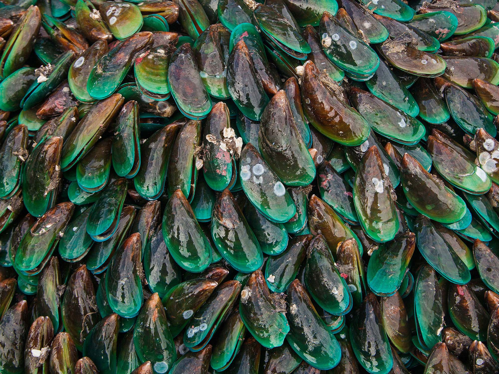
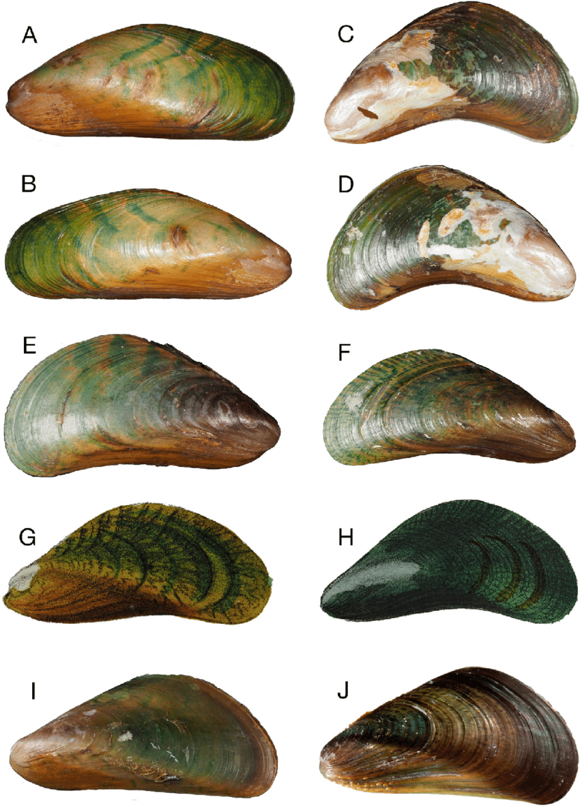

Sri Lanka · Colombo
Sri Lanka · Colombo
What's This Guide For?
The Job
You're cleaning hulls. You need to spot the bad stuff before you scrape it off. This guide shows you what to look for and what to report.
Why It Matters
Invasive marine species hitch rides on ship hulls and in sea chests. Sri Lanka has already recorded new invaders such as the charru mussel (Mytella strigata) near Anawilundawa, and the Asian green mussel is widespread. Divers and inspectors are the first line of defence under the IMO Biofouling Guidelines.
Priority Levels
- HIGH RISK Invasive marine species of concern to Sri Lanka. Stop work, document & report to MEPA.
- WATCH Emerging threat in the region. Document & report.
- NATIVE Normal local fouling — no report needed.
Aligned with the IMO Biofouling Guidelines (resolution MEPC.378(80)) and the GEF-UNDP-IMO GloFouling / IMO–Norad TEST Biofouling Project.
⚠️ Suspect an Invasive Marine Species?
- STOP cleaning — pause in-water work until MEPA advises
- Take photos - close-up + wide shot, use your hand for scale
- Note where on the hull (sea chest, niche area, depth, port/starboard) and the vessel's last ports
- DON'T scrape it off — keep the specimen intact for identification
- Report to the Marine Environment Protection Authority (MEPA) — Tel +94 11 2554373 / +94 11 2554006, email info@mepa.gov.lk (mepa.gov.lk)
Part 1: Invasive Hull Foulers — The Bad Stuff
These are the pests that stick to hulls and need reporting. If you see any of these, follow your reporting protocol.

Nicknamed "sea vomit" - and it looks like it. Creamy-tan carpet that grows over everything. A serious hull and niche-area fouler — report any sightings.
How to Spot It
- Creamy/tan/orange colour - like old wax
- Veiny look - like varicose veins
- Feels leathery, NOT slimy
- Can drip down like melted candle wax
- Tiny holes (siphons) all over surface

Big mussel with bright green shell. Common on ships coming from Asia. Check sea chests carefully - they love them.
How to Spot It
- Young ones = bright emerald green
- Older ones = brownish-green
- Big - 80-165mm (hand-sized)
- Inside is blue-green when open
- Beak points down

Small stripy mussel that forms thick clusters. Loves brackish water so check sea chests and anywhere with mixed water.
How to Spot It
- Small - only up to 25mm (thumbnail-sized)
- Dark stripes on shell
- Packs together in thick layers
- Often found inside sea chests

A small dark mussel that has recently invaded Sri Lanka — first found in 2023 in shrimp farms near the Anawilundawa Ramsar wetland on the north-west coast. Forms dense clusters that foul aquaculture gear, clog nets and intakes, and smother native bivalves. Tolerates brackish water, so check sea chests, internal seawater systems and low-salinity niche areas.
How to Spot It
- Small — usually 20-40mm long
- Dark olive-brown to blackish, sometimes with faint rays
- Glossy, smooth shell with a pointed beak
- Packs into thick clumps on hard surfaces and on each other
- Thrives in estuaries, lagoons and brackish water

Big mussel from NZ. Look for vessels that have been to New Zealand recently. NOT in Australia.
How to Spot It
- Green "lip" around shell edge - key ID feature
- Brown-green shell outside
- Massive - up to 240mm (bigger than your hand)

Big feathery worm in a leathery tube. The fan is much bigger than native tube worms. A known hull fouler — report any sightings.
How to Spot It
- Fan is HUGE - 45-60mm across
- Fan spirals in (not flat like natives)
- Stripy - orange/purple/white bands
- Tube is brown and leathery
- Fan pulls in when you get close

Big brown seaweed with a central spine. A cold-temperate kelp — unlikely to establish in tropical Sri Lanka, but transiting vessels may carry it. Report any sightings.
How to Spot It
- Big brown fronds with a midrib spine
- Wavy ruffled edges
- Can be up to 3m long
- Frilly reproductive bit at the base

Bright green feathery algae. Called "killer algae" because it smothers everything. An aggressive smothering weed — report any sightings.
How to Spot It
- Bright green - stands out
- Feather-shaped fronds
- Spreads with creeping runners
- Can get 65cm tall

Small mussel that forms extremely dense mats that smother surfaces. A spreading fouler of warm and temperate waters — report any sightings.
How to Spot It
- Small - up to 30mm
- Thin, fragile, easily crushed shell
- Greenish with zigzag markings
- Iridescent radiating bands
- Forms dense mats (thousands per m²)

Medium mussel with variable external colours. NOT in Australia. Forms extremely dense colonies. Key giveaway: distinctive blue-purple opalescent interior and yellowish flesh — open the shell to confirm ID.
How to Spot It
- Medium 22-50mm
- Variable exterior: black, brown, grey, orange
- Zigzags, spots, or concentric bands on shell
- Blue-purple opalescent interior — distinctive giveaway
- Yellowish flesh — key ID feature
- Forms extremely dense colonies
Reference: NIMPIS — see NIMPIS for additional reference photos showing internal coloration.

Medium crab with distinctive hairy "mittens" on claws. NOT in Australia. Can carry lung fluke parasite.
How to Spot It
- Dense patches of dark hair on claws ("mittens")
- White-tipped claws
- Up to 80mm carapace
- Olive-brown shell
- 4 spines either side of eyes
Part 2: Niche Area Hitchhikers
These aren't foulers - they don't grow on the hull. But they hide in sea chests, rope guards, gratings and other nooks. You might find them when inspecting those areas.

Green crab that hides in sea chests and rope guards. A temperate invader — most likely on vessels from cooler waters. Report any sightings.
How to Spot It
- Green shell (can be orange underneath)
- 5 spines each side behind the eyes
- Up to 90mm across
- Check sea chests and niche areas

How to Spot It
- Back legs are flat paddles (for swimming)
- 6 spines between the eyes
- 5 spines on each claw
- Up to 120mm across
- Olive-brown colour
Part 3: Native Hull Fouling — The Normal Stuff

Your everyday Aussie mussel. Blue-black shell in clumps. You'll scrape heaps of these.
How to Spot It
- Blue-black to dark brown shell
- Pointy triangle shape
- Clumps together with threads
- NOT green - that's the Asian one

The classic white barnacle cones. All over hulls, props, sea chests. Everywhere.
How to Spot It
- White/grey cone shapes
- Diamond-shaped opening at top
- Glued directly to surface
- Can be packed solid

Big pink/red barnacles. Same deal as the white ones but bigger and coloured.
How to Spot It
- Big cones - up to 50mm across
- Red/pink colour
- Ridged shell plates
.jpg?width=400)
White calcareous tubes with small feathery fans. Tiny spiral ones (spirorbids) and bigger straight ones.
How to Spot It
- Hard white tubes (calcium)
- Spirorbids are tiny coils - 3mm
- Larger serpulids are straight/curved
- Small feathery fan - NOT the big spiral fan of European fan worm

White tube worm that builds up in reef-like masses. Pink feathery tentacles.
How to Spot It
- White calcified tubes in clumps
- Builds up in reef-like masses
- Pink feeding tentacles

Feathery purple/brown tufts. Looks like a fuzzy bush or seaweed but it's actually tiny animals.
How to Spot It
- Purple/brown colour
- Bushy branching shape
- Delicate and feathery
- Flexible - waves in current
.jpg?width=400)
Flat orangey-red crust that spreads over surfaces. Very common hull fouler.
How to Spot It
- Red/rust/orange sheets
- Flat encrusting growth
- Dark black edge where it's growing
- Hard calcified surface
.jpeg?width=400)
White/pink lumpy crusts. Looks like someone splattered plaster on the hull.
How to Spot It
- White/pink colour
- Chalky texture
- Lumpy irregular growth
- Hard surface

Soft spongy sheets in various colours. Orange, yellow, grey. Has tiny holes (oscules) all over. Note: In the photo, the pink encrusting growth is the sponge — other organisms in the image (e.g. smooth rubbery sheets) may be colonial ascidians, which can look similar at first glance.
How to Spot It
- Sheet or cushion growth on hard surfaces
- Various colours — often orange, pink, yellow, grey
- Soft and spongy to touch (not rubbery like ascidians)
- Tiny pores (oscules) visible — key difference from ascidians
- Crumbly texture when broken (ascidians are more rubbery)

Thin jelly-like mats. Similar to the invasive Didemnum but thinner and more gelatinous. Be careful with ID.
How to Spot It
- Thin gelatinous mats
- Various colours
- Thinner than invasive carpet sea squirt
- No veiny/waxy texture
_-_Lincoln_Park_(Seattle).jpg?width=400)
Single blob-shaped animals, orange or white. Two holes on top (siphons).
How to Spot It
- Orange/white colour
- Single blobs, not colonies
- Two openings on top
- Leathery skin

Bright green thin sheets. Looks like salad leaves. Common in nutrient-rich ports.
How to Spot It
- Bright green
- Thin see-through sheets
- Ruffled wavy edges
- Soft like lettuce

Stringy green filaments in tangled mats. Like green hair or cotton wool.
How to Spot It
- Bright green filaments
- Branching threads
- Tangled mats
- Coarse stringy texture

Fine brown fuzz. First thing to grow on new fouling. Forms a fuzzy coating.
How to Spot It
- Fine brown filaments
- Fuzzy appearance
- Early coloniser - first to appear
- Soft and delicate
_(48737220543).jpg?width=400)
Red/purple branching seaweed. Rubbery texture. Common on hulls.
How to Spot It
- Red/purple colour
- Branching fronds
- Rubbery cartilage texture
- Common in subtidal zone
_-_Mytilidae_-_Mollusc_shell.jpeg?width=400)
Native mussel with fuzzy hairy shell. Brown/black with distinctive bristly covering.
How to Spot It
- Hairy/fuzzy shell covering
- Brown/black colour
- Dense clumps
- Up to 60mm
Quick Reference — Sri Lanka IMS of Concern
Invasive marine species of interest or concern to Sri Lanka. Aligned with the IMO Biofouling Guidelines and the GEF-UNDP-IMO GloFouling / IMO–Norad TEST Biofouling Project. Report sightings to MEPA.
🛑 High Risk — Report to MEPA
| Type | Species | Quick ID |
|---|---|---|
| Mussel | Charru Mussel (Mytella strigata) | Small 20-40mm, dark olive-black, glossy, dense brackish-water clumps — new invader |
| Mussel | Asian Green Mussel (Perna viridis) | Bright green shell (young), big 80-165mm, in sea chests |
| Mussel | Black-striped False Mussel (Mytilopsis sallei) | Small 25mm, dark stripes, brackish, in sea chests |
| Mussel | Brown Mussel (Perna perna) | Dark brown/black, up to 90mm, thick clusters |
| Tube Worm | European Fan Worm (Sabella spallanzanii) | Big spiral fan 45-60mm, stripy, leathery brown tube |
| Oyster | Pacific Oyster (Magallana gigas) | Irregular shell, sharp frilly edges |
| Sea Squirt | Carpet Sea Squirt (Didemnum vexillum) | Creamy veiny mat, waxy texture, dripping tendrils |
⚠️ Watch List — Know What They Look Like
| Type | Species | Quick ID |
|---|---|---|
| Sea Squirt | White Colonial Sea Squirt (Didemnum perlucidum) | White/translucent thin sheets on hull and niches |
| Barnacles | Fouling Barnacles (Amphibalanus spp.) | Hard cone shells in dense crusts — common tropical foulers |
| Cold-water | Wakame / N. Pacific Seastar | Unlikely to establish in tropical waters, but transiting vessels may carry them |
Report It
MarineStream
Biofouling Manager: Mat Harvey
Operations Manager: Sam Diamond
Website: www.marinestream.com.au
IMO TEST Biofouling
GEF-UNDP-IMO GloFouling / IMO–Norad TEST Biofouling Project
Delivered in Sri Lanka with MEPA & MTCC Africa (JKUAT)
MEPA Sri Lanka
Marine Environment Protection Authority (also +94 11 2554006)
Email: info@mepa.gov.lk
Web: mepa.gov.lk
No.177, Nawala Road, Narahenpita, Colombo 05
📍 Sri Lanka Reporting Notes
- Charru mussel (Mytella strigata): New invader — first recorded 2023 near the Anawilundawa Ramsar wetland. Report any dense dark-mussel clusters.
- Asian green mussel (Perna viridis): Widespread in the region and a major hull/sea-chest fouler.
- Black-striped false mussel (Mytilopsis sallei): Brackish-water pest — check sea chests and internal seawater systems.
- Pathways: Hull biofouling, sea chests and ballast water. Sri Lanka is implementing the IMO Biofouling Guidelines through the TEST Biofouling Project.
- Report suspected invasive marine species to MEPA (+94 11 2554373, info@mepa.gov.lk). Keep the specimen, photos and the vessel's recent port history.